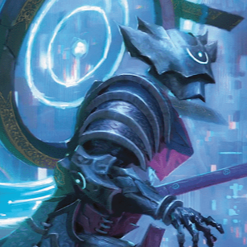
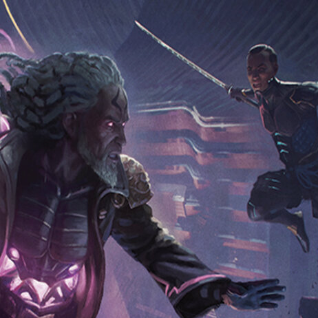

Acualmente está viendo la expansión 2 de las 2 posibles.
Nombre de la expansión: Kamigawa: La dinastía del Neon. Código de la expansión: NEC.
Temática de la expansión: Set inspirado en la dinastía japonesa siguiendo una temática futurística.
Lanzamiento de la expansión: 2022-02-18. Final de lanzamiento de la expansión: 2024-06-23.
Acualmente está viendo la baraja 2 de las 2 posibles de la expansión seleccionada.
Nombre del arquetipo: Mejoras desatadas
Color del arquetipo: Verde.
Estilo de juego del mazo: Gran número de mejoras que aportan versatilidad al jugador.
Lista de rivales favorables:
- Mazos de tempo.
- Mazos de color rojo.
Lista de rivales desfavorables:
- Mazos con muchos hechizos.
- Mazos de color blanco.
Remplazos de la carta: Chishiro, de la espada fragmentada.
- Kaima, de la calma fracturada.
- Trynn, campeón de la libertad.
Remplazos de la carta: Grumgully, el generoso.
- Ulasht, la semilla del odio.
- Hydra del apocalipsis.